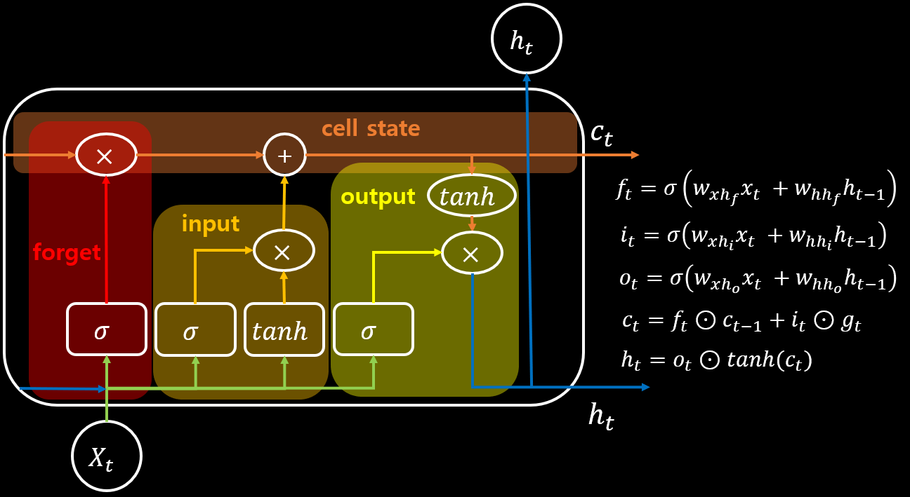

LSTM Layer란?
LSTM은 Long Short Term Memory networks의 약자입니다. RNN과 같이 자연어처리, 음성처리 등 Sequential 데이터를 처리하기 위해 많이 사용되는 layer입니다.
기존의 RNN은 학습하면서 점점 과거 정보를 잊어버리는(Gradient Vanishing) 문제가 발생하고 이러한 장기적인 의존성 문제를 해결하기 위해서 설계된 layer입니다.

LSTM의 핵심적인 요소는 cell state 입니다.
LSTM의 cell state는 공장의 컨베이어 벨트와 같으며 이러한 컨베이어 벨트에 gate를 이용하여 값을 공급하여 정보를 추가하거나 제거해 갑니다.gate는 총 3가지로 이루어져 있습니다.
forget gate는 정보를 얼마나 잊을 것인지에 대해서 연산하는 gate입니다. sigmoid를 통해 0 ~ 1 사이의 값이 출력되는데 1에 가까우면 기억하라는 의미를 포함하고 0에 가까우면 잊으라는 의미를 포함합니다.
input gate는 새로운 정보를 공급하는 연산을 하는 gate입니다. sigmoid를 통해 어떤 입력값을 업데이트해야 할지 결정하고 tanh는 새로운 입력값을 만듭니다. 두 개의 값을 합쳐서 새로운 값이 기존 값에 영향을 주는 값을 만들어 냅니다.
output gate는 어떤 출력값을 다음 state에 보내줄지 결정하는 gate입니다. sigmoid를 통해 어떤 값을 출력해야 할지 결정하고 tanh는 업데이트 된 cell state의 영향을 말해줍니다.
결론적으로 순서는 forget gate로 잊어야할 부분을 잊고 input gate로 새로운 값을 추가하며 cell state를 업데이트 하고 output gate를 통해 최종적으로 출력합니다.
lstm_layer.c
increment_layer
static void increment_layer(layer *l, int steps)
{
int num = l->outputs*l->batch*steps;
l->output += num;
l->delta += num;
l->x += num;
l->x_norm += num;
}
forward_lstm_layer
void forward_lstm_layer(layer l, network state)
{
network s = { 0 };
s.train = state.train;
int i;
layer wf = *(l.wf);
layer wi = *(l.wi);
layer wg = *(l.wg);
layer wo = *(l.wo);
layer uf = *(l.uf);
layer ui = *(l.ui);
layer ug = *(l.ug);
layer uo = *(l.uo);
fill_cpu(l.outputs * l.batch * l.steps, 0, wf.delta, 1);
fill_cpu(l.outputs * l.batch * l.steps, 0, wi.delta, 1);
fill_cpu(l.outputs * l.batch * l.steps, 0, wg.delta, 1);
fill_cpu(l.outputs * l.batch * l.steps, 0, wo.delta, 1);
fill_cpu(l.outputs * l.batch * l.steps, 0, uf.delta, 1);
fill_cpu(l.outputs * l.batch * l.steps, 0, ui.delta, 1);
fill_cpu(l.outputs * l.batch * l.steps, 0, ug.delta, 1);
fill_cpu(l.outputs * l.batch * l.steps, 0, uo.delta, 1);
if (state.train) {
fill_cpu(l.outputs * l.batch * l.steps, 0, l.delta, 1);
}
for (i = 0; i < l.steps; ++i) {
s.input = l.h_cpu;
forward_connected_layer(wf, s);
forward_connected_layer(wi, s);
forward_connected_layer(wg, s);
forward_connected_layer(wo, s);
s.input = state.input;
forward_connected_layer(uf, s);
forward_connected_layer(ui, s);
forward_connected_layer(ug, s);
forward_connected_layer(uo, s);
copy_cpu(l.outputs*l.batch, wf.output, 1, l.f_cpu, 1);
axpy_cpu(l.outputs*l.batch, 1, uf.output, 1, l.f_cpu, 1);
copy_cpu(l.outputs*l.batch, wi.output, 1, l.i_cpu, 1);
axpy_cpu(l.outputs*l.batch, 1, ui.output, 1, l.i_cpu, 1);
copy_cpu(l.outputs*l.batch, wg.output, 1, l.g_cpu, 1);
axpy_cpu(l.outputs*l.batch, 1, ug.output, 1, l.g_cpu, 1);
copy_cpu(l.outputs*l.batch, wo.output, 1, l.o_cpu, 1);
axpy_cpu(l.outputs*l.batch, 1, uo.output, 1, l.o_cpu, 1);
activate_array(l.f_cpu, l.outputs*l.batch, LOGISTIC);
activate_array(l.i_cpu, l.outputs*l.batch, LOGISTIC);
activate_array(l.g_cpu, l.outputs*l.batch, TANH);
activate_array(l.o_cpu, l.outputs*l.batch, LOGISTIC);
copy_cpu(l.outputs*l.batch, l.i_cpu, 1, l.temp_cpu, 1);
mul_cpu(l.outputs*l.batch, l.g_cpu, 1, l.temp_cpu, 1);
mul_cpu(l.outputs*l.batch, l.f_cpu, 1, l.c_cpu, 1);
axpy_cpu(l.outputs*l.batch, 1, l.temp_cpu, 1, l.c_cpu, 1);
copy_cpu(l.outputs*l.batch, l.c_cpu, 1, l.h_cpu, 1);
activate_array(l.h_cpu, l.outputs*l.batch, TANH);
mul_cpu(l.outputs*l.batch, l.o_cpu, 1, l.h_cpu, 1);
copy_cpu(l.outputs*l.batch, l.c_cpu, 1, l.cell_cpu, 1);
copy_cpu(l.outputs*l.batch, l.h_cpu, 1, l.output, 1);
state.input += l.inputs*l.batch;
l.output += l.outputs*l.batch;
l.cell_cpu += l.outputs*l.batch;
increment_layer(&wf, 1);
increment_layer(&wi, 1);
increment_layer(&wg, 1);
increment_layer(&wo, 1);
increment_layer(&uf, 1);
increment_layer(&ui, 1);
increment_layer(&ug, 1);
increment_layer(&uo, 1);
}
}
forward
backward_lstm_layer
void backward_lstm_layer(layer l, network state)
{
network s = { 0 };
s.train = state.train;
int i;
layer wf = *(l.wf);
layer wi = *(l.wi);
layer wg = *(l.wg);
layer wo = *(l.wo);
layer uf = *(l.uf);
layer ui = *(l.ui);
layer ug = *(l.ug);
layer uo = *(l.uo);
increment_layer(&wf, l.steps - 1);
increment_layer(&wi, l.steps - 1);
increment_layer(&wg, l.steps - 1);
increment_layer(&wo, l.steps - 1);
increment_layer(&uf, l.steps - 1);
increment_layer(&ui, l.steps - 1);
increment_layer(&ug, l.steps - 1);
increment_layer(&uo, l.steps - 1);
state.input += l.inputs*l.batch*(l.steps - 1);
if (state.delta) state.delta += l.inputs*l.batch*(l.steps - 1);
l.output += l.outputs*l.batch*(l.steps - 1);
l.cell_cpu += l.outputs*l.batch*(l.steps - 1);
l.delta += l.outputs*l.batch*(l.steps - 1);
for (i = l.steps - 1; i >= 0; --i) {
if (i != 0) copy_cpu(l.outputs*l.batch, l.cell_cpu - l.outputs*l.batch, 1, l.prev_cell_cpu, 1);
copy_cpu(l.outputs*l.batch, l.cell_cpu, 1, l.c_cpu, 1);
if (i != 0) copy_cpu(l.outputs*l.batch, l.output - l.outputs*l.batch, 1, l.prev_state_cpu, 1);
copy_cpu(l.outputs*l.batch, l.output, 1, l.h_cpu, 1);
l.dh_cpu = (i == 0) ? 0 : l.delta - l.outputs*l.batch;
copy_cpu(l.outputs*l.batch, wf.output, 1, l.f_cpu, 1);
axpy_cpu(l.outputs*l.batch, 1, uf.output, 1, l.f_cpu, 1);
copy_cpu(l.outputs*l.batch, wi.output, 1, l.i_cpu, 1);
axpy_cpu(l.outputs*l.batch, 1, ui.output, 1, l.i_cpu, 1);
copy_cpu(l.outputs*l.batch, wg.output, 1, l.g_cpu, 1);
axpy_cpu(l.outputs*l.batch, 1, ug.output, 1, l.g_cpu, 1);
copy_cpu(l.outputs*l.batch, wo.output, 1, l.o_cpu, 1);
axpy_cpu(l.outputs*l.batch, 1, uo.output, 1, l.o_cpu, 1);
activate_array(l.f_cpu, l.outputs*l.batch, LOGISTIC);
activate_array(l.i_cpu, l.outputs*l.batch, LOGISTIC);
activate_array(l.g_cpu, l.outputs*l.batch, TANH);
activate_array(l.o_cpu, l.outputs*l.batch, LOGISTIC);
copy_cpu(l.outputs*l.batch, l.delta, 1, l.temp3_cpu, 1);
copy_cpu(l.outputs*l.batch, l.c_cpu, 1, l.temp_cpu, 1);
activate_array(l.temp_cpu, l.outputs*l.batch, TANH);
copy_cpu(l.outputs*l.batch, l.temp3_cpu, 1, l.temp2_cpu, 1);
mul_cpu(l.outputs*l.batch, l.o_cpu, 1, l.temp2_cpu, 1);
gradient_array(l.temp_cpu, l.outputs*l.batch, TANH, l.temp2_cpu);
axpy_cpu(l.outputs*l.batch, 1, l.dc_cpu, 1, l.temp2_cpu, 1);
copy_cpu(l.outputs*l.batch, l.c_cpu, 1, l.temp_cpu, 1);
activate_array(l.temp_cpu, l.outputs*l.batch, TANH);
mul_cpu(l.outputs*l.batch, l.temp3_cpu, 1, l.temp_cpu, 1);
gradient_array(l.o_cpu, l.outputs*l.batch, LOGISTIC, l.temp_cpu);
copy_cpu(l.outputs*l.batch, l.temp_cpu, 1, wo.delta, 1);
s.input = l.prev_state_cpu;
s.delta = l.dh_cpu;
backward_connected_layer(wo, s);
copy_cpu(l.outputs*l.batch, l.temp_cpu, 1, uo.delta, 1);
s.input = state.input;
s.delta = state.delta;
backward_connected_layer(uo, s);
copy_cpu(l.outputs*l.batch, l.temp2_cpu, 1, l.temp_cpu, 1);
mul_cpu(l.outputs*l.batch, l.i_cpu, 1, l.temp_cpu, 1);
gradient_array(l.g_cpu, l.outputs*l.batch, TANH, l.temp_cpu);
copy_cpu(l.outputs*l.batch, l.temp_cpu, 1, wg.delta, 1);
s.input = l.prev_state_cpu;
s.delta = l.dh_cpu;
backward_connected_layer(wg, s);
copy_cpu(l.outputs*l.batch, l.temp_cpu, 1, ug.delta, 1);
s.input = state.input;
s.delta = state.delta;
backward_connected_layer(ug, s);
copy_cpu(l.outputs*l.batch, l.temp2_cpu, 1, l.temp_cpu, 1);
mul_cpu(l.outputs*l.batch, l.g_cpu, 1, l.temp_cpu, 1);
gradient_array(l.i_cpu, l.outputs*l.batch, LOGISTIC, l.temp_cpu);
copy_cpu(l.outputs*l.batch, l.temp_cpu, 1, wi.delta, 1);
s.input = l.prev_state_cpu;
s.delta = l.dh_cpu;
backward_connected_layer(wi, s);
copy_cpu(l.outputs*l.batch, l.temp_cpu, 1, ui.delta, 1);
s.input = state.input;
s.delta = state.delta;
backward_connected_layer(ui, s);
copy_cpu(l.outputs*l.batch, l.temp2_cpu, 1, l.temp_cpu, 1);
mul_cpu(l.outputs*l.batch, l.prev_cell_cpu, 1, l.temp_cpu, 1);
gradient_array(l.f_cpu, l.outputs*l.batch, LOGISTIC, l.temp_cpu);
copy_cpu(l.outputs*l.batch, l.temp_cpu, 1, wf.delta, 1);
s.input = l.prev_state_cpu;
s.delta = l.dh_cpu;
backward_connected_layer(wf, s);
copy_cpu(l.outputs*l.batch, l.temp_cpu, 1, uf.delta, 1);
s.input = state.input;
s.delta = state.delta;
backward_connected_layer(uf, s);
copy_cpu(l.outputs*l.batch, l.temp2_cpu, 1, l.temp_cpu, 1);
mul_cpu(l.outputs*l.batch, l.f_cpu, 1, l.temp_cpu, 1);
copy_cpu(l.outputs*l.batch, l.temp_cpu, 1, l.dc_cpu, 1);
state.input -= l.inputs*l.batch;
if (state.delta) state.delta -= l.inputs*l.batch;
l.output -= l.outputs*l.batch;
l.cell_cpu -= l.outputs*l.batch;
l.delta -= l.outputs*l.batch;
increment_layer(&wf, -1);
increment_layer(&wi, -1);
increment_layer(&wg, -1);
increment_layer(&wo, -1);
increment_layer(&uf, -1);
increment_layer(&ui, -1);
increment_layer(&ug, -1);
increment_layer(&uo, -1);
}
}
backward